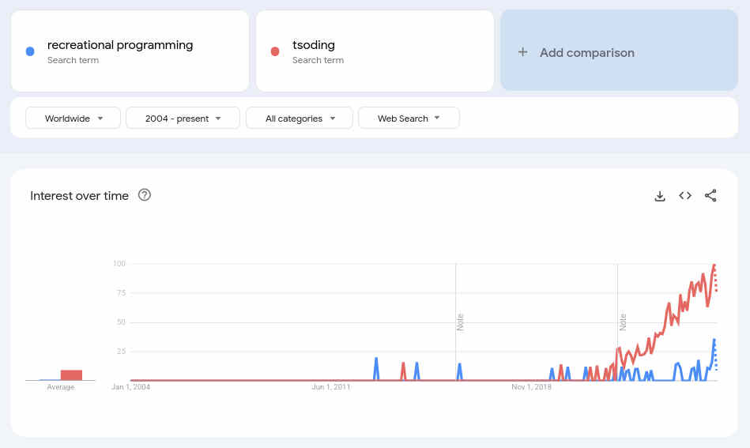

Giovanni's Diary > Subjects > Programming > Notes >
Recreational Programming?
I would define "recreational programming" (or "recreational coding") as the act of programming for the purpose of pure enjoyment rather than a strictly application-based professional activity. It is the idea that programming can be a gratifying and pleasant activity for some nerds. A fellow recreational programmer finds enjoyment in exploring their programming ideas just for the sake of exploring them, often with little to no practical use, motivated simply by the idea that they are "cool". It frequently happens that a recreational programmer writes things that have never been done before or in new ways (sometimes inventions of their own), thanks to their deep understanding of computer systems, pushing the collective understanding of what is possible. Any recreational programmer deeply cares about their code and considers coding as a form of art, or an expression of themselves.
The term "recreational programming" was popularized by the Russian programmer "Tsoding" (github, twitch, youtube), who introduced many young programmers to the art of coding for fun. His anti-corporate, anti-trend style of programming, along with his great skill, experience and charming personality made him well-known among nerds, creating a strong community around him. Some of his notable projects are: a compiler for the B programming language written in crust (a rust dialect where you can only use unsafe and unconventional features), a TODO web application written in x86-64 assembly, a react renderer that uses Raylib as the backend, and many many more.

Figure 1: Popularity of "recreational programming" and "tsoding" on google search. link
The origin of the term is not clear. Aside from Tsoding, there are other mentions around the internet, but the oldest one I have found is in Terry A. Davis's TempleOS. Even his programming language, HolyC, is referred to as a language for recreational programming.
TempleOS is a x86_64 [...] operating system for recreational programming.
- Doc/Welcome.DD
This demo is for you to play around with ring 3. TempleOS is for recreational programming, after all.
- Demo/Lectures/Ring3.HC:
However, the idea of coding for fun has been around as long as computer programming has existed, and many veteran programmers have experienced at least once the joy that a recreational programmer lives for. The great hackers at MIT in the 60s wrote things like the Harmony Compiler and Spacewar! on the PDP-1 for fun, things most people could not even imagine. They thought about programming as the most important thing in the world, in sharp contrast to the IBM people in the same building, who were doing very boring and behind closed doors business or military applications.
The recreational programmer and the hacker share values in many ways and would get along well (on IRC). Yet, they have great differences too. Hacker culture, born at MIT and spread worldwide, has developed a strong ethic based on ideas like "sharing, openness, decentralization and free access to computers". Hackers believe that all information should be free and often mistrust authority. The recreational programmer does not care much about all that stuff. These are good and important things, but the recreational programmer just wants to have fun and stay away from politics.
The ideas behind recreational programming are not unique to programming either; for example, recreational mathematics popularized by Martin Gardner has existed for much longer, as well as recreational music composition like other forms of artistic expression. These activities motivate people in their work, while improving their skills.
If you have some comments / additions to this page, please contact me.
Travel: Programming Notes, Index